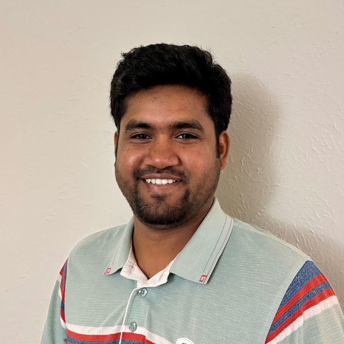

Mathematics · Machine Learning · Scientific Computing
Md Joshem Uddin
I develop mathematically grounded machine-learning methods for graph-structured and temporal data, with particular emphasis on topological and geometric learning.
Ph.D. in Mathematics, The University of Texas at Dallas. Incoming Postdoctoral Researcher, University of Georgia.
My work spans graph representation learning, temporal graph models, relational learning, and applications to power-grid resilience, outage detection, and cybersecurity.

Research Interests
My research lies at the intersection of applied mathematics, machine learning, and network science.
Topological and Geometric ML
Topology-aware representations, persistent-homology-based descriptors, and mathematically informed neural architectures.
Graph and Temporal Learning
Node and graph representation learning, temporal graphs, graph transformers, and relational deep learning.
AI for Power Systems
Cyberattack detection, outage detection, anomaly localization, and resilient learning for modern power grids.
Selected Work
A small selection of recent research projects. The complete list appears on the publications page.
- TopoFormer: Topology Meets Attention for Graph Learning — ICLR 2026
- T3former: Temporal Graph Classification with Topological Machine Learning — AAAI 2026
- MP-Grid: Detecting Power Grid Outages with Topological Machine Learning — Applied Energy 2026
- SCNode: Spatial and Contextual Coordinates for Graph Representation Learning — TMLR 2025
Academic Background
I completed my Ph.D. in Mathematics at The University of Texas at Dallas, where I worked on topology-aware graph learning and temporal networks. Before joining UT Dallas, I served as a Lecturer at the University of Dhaka and at AIUB.
Collaboration
I welcome collaborations involving topological machine learning, graph and relational data, temporal modeling, scientific machine learning, and resilient power-system analytics.